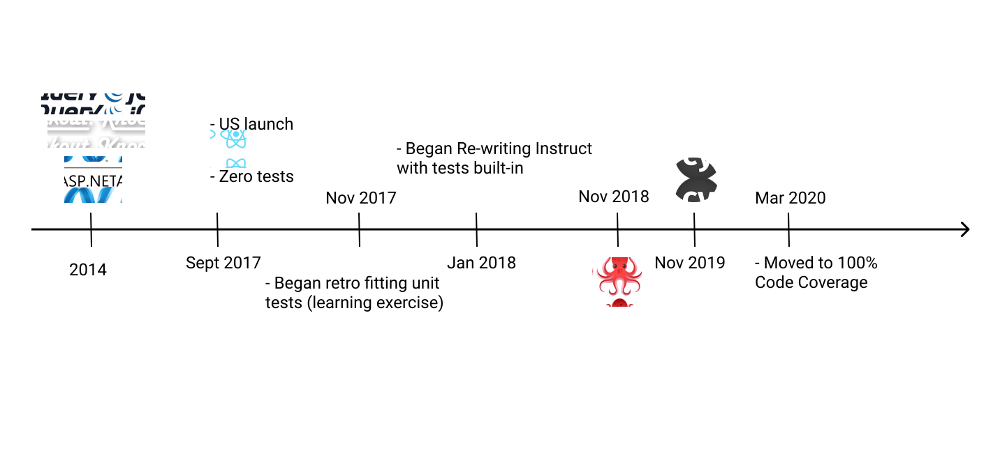
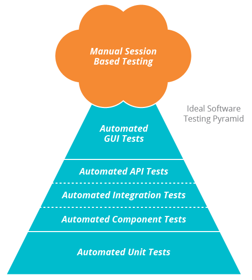
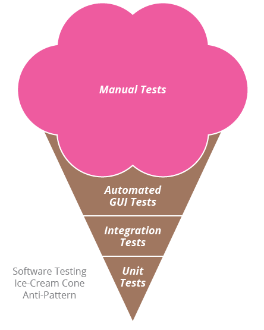

Hello There
- Senior Frontend Engineer
- Automated testing advocate
Brief History

Not the complete package yet....but we're maturing
Why test?
- Confidence in our code;
- Permanently fix bugs;
- Safety net while refactoring;
- Fast feedback;
- Living documentation;
Test Pyramid


(Adapted from Thoughtworks blog post: Architecting for
Continuous Delivery)
Types of Tests
Static Analysis
| Tooling |
Prettier, ESLint & Stylelint |
| Responsbility |
Everyone |
| Run Time |
During development, PR creation & merge into
master
|
Unit Tests
| Tooling |
Jest, React Testing Library |
| Responsbility |
Everyone |
| Run Time |
During development, PR creation & merge into
master
|
Shallow Integration
| Tooling |
Cypress |
| Responsbility |
Everyone |
| Run Time |
During PR creation & merge into master |
End-to-End
| Tooling |
Selenium, Cypress |
| Responsbility |
Everyone |
| Run Time |
Overnight against QA |
Exploratory
| Tooling |
Humans |
| Responsbility |
Everyone |
| Run Time |
On Docker, QA & Production |
Integration Test Example
Lessions Learnt
- Tests should be really easy to understand;
- Ensuring Quality is everyone's responsbility;
-
Quality gates ensure tests are 1st class citizens;
- Test throughout over testing at the end;